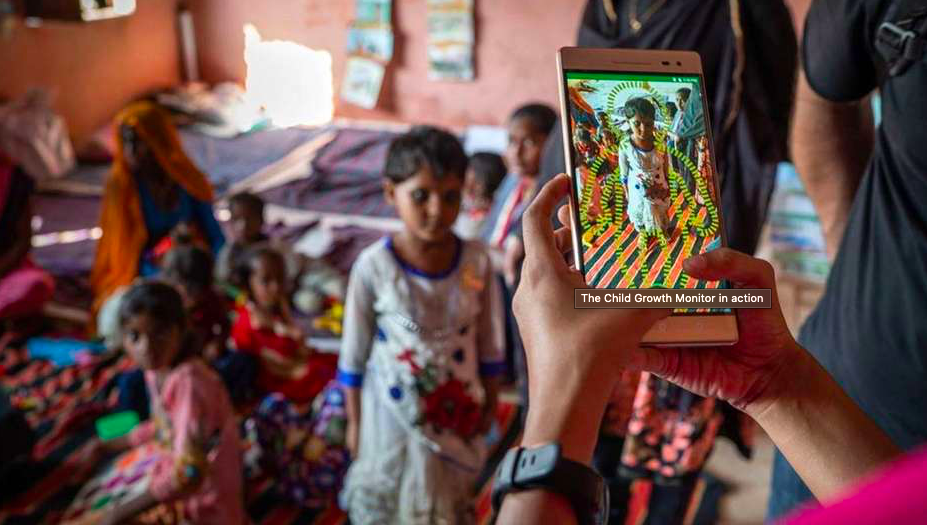

Head of Product, Tech & AI
Leading cross-functional teams to build child anthropometry and malnutrition detection tools using AI and augmented reality. Building a comprehensive mobile app solution to instantly detect malnutrition for screening and regular growth monitoring.
